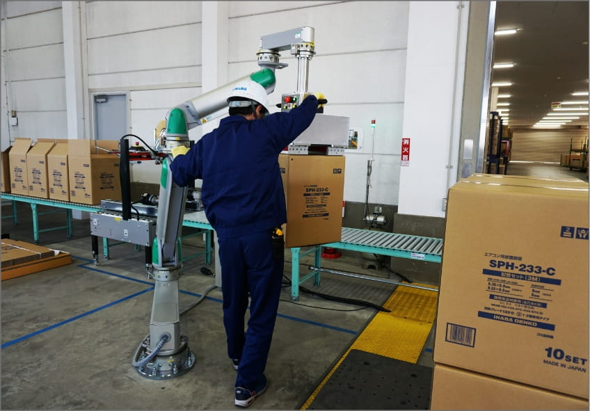

季節による繁閑がある現場の働き方改革を
コンパクトアームがアシスト
因幡電機産業様

電設資材・産業機器の販売や、空調関連部材の製造など、幅広い事業を展開する因幡電機産業様。
同社の茨城工場では、家庭用エアコンの配管に使われる被覆銅管を製造していますが、この製品は重いもので1つ30㎏近くにもなるといいます。そのため、完成した製品を人力でパレットに積むのはひと苦労です。
とはいえ、季節によって生産量が大きく変動するため、この作業を産業ロボットなどを導入して自動化するのは、コストを考えると非現実的。そこで採用されたのが、弊社のヒューマンアシスト製品「コンパクトアーム」なのです。
課 題

繁忙期には1日に300ケースもの荷積み作業が必要に
茨城県筑西市にある因幡電機産業様の茨城工場。
こちらの工場では、家庭用エアコンの配管に使われる被覆銅管が作られていますが、この銅管は重いもので30㎏近くの重さがあります。
繁忙期には、出荷のために1日に250～300ケースの製品をパレットに積んでいかなければなりません。
しかし、茨城工場は、他の工場に比べると約25名と人手が少なく、製品の積み下ろし作業には何かしらの配慮が必要でした。
季節によって生産量が大きく変動するため、この作業を産業ロボットなどを導入して自動化するのは、コストを考えると非現実的です。
「重労働」のほかに「人手不足」「コスト」がネックになっていました。
採用のきっかけ

産業ロボットでなく助力装置を導入した理由とは？
しかし、なぜ、その解決策として、ヒューマンアシスト装置の導入が選択されたのでしょうか？
それは「1つはスペースを有効活用したかったという理由があります。産業ロボットを使うと、安全を確保するために立ち入れないスペースができてしまいますので――。
また、空調関連部材の生産は季節によって大きく変動します。それ故、費用対効果を考えると産業ロボットの採用は現実的ではありませんでしたから」とのこと。
つまり、作業負担の軽減効果はもちろん、省スペースやコストといったあらゆるニーズを満たせるソリューションがヒューマンアシスト製品だったのです。
なお、因幡電機産業様は、空調関連部材、防火部材、給水システム部材などを製造・販売する「自社製品事業」のほか、「電設資材事業」と「産業機器事業」を展開。
この内、「産業機器事業」では、産業用ロボットも取り扱っています。つまりコンパクトアームは、産業用ロボットを取り扱うお客様にも評価されたヒューマンアシスト製品だといえるのです。
導入後の効果

機能性、安全性に加え用途が広がる可能性も高評価
そして数あるヒューマンアシスト製品の中で、コンパクトアームが選ばれたのは「設置面が床側でコンパクトに折りたためることや、
装置の関節部分に指が入る隙間がなく安全面に配慮していること」が決め手になりましたが、実際に作業される方からの評判も上々だといいます。
具体的には「作業が楽になった」「装置は床面からのアプローチなので、上部スペースを気にせず作業ができてありがたい」
「半自動で人が扱う製品なので、挟み込みや誤作動の防止といった細かい部分の配慮が素晴らしく、安心して使える」といった声が挙がっているようです。

働く人が快適である――
真に安全な作業環境を実現するために
また、コンパクトアームの導入の効果は、作業負担の軽減や業務効率化といった直接的なものだけではありません。
性別や体力に関係なく、誰でも力仕事に携われる環境を構築できたことは、ダイバーシティを推進する上でも重要です。
ときには、男性だけでなく、女性の姿も見られますが、そのようなことが可能なのは、積み下ろしに弊社のヒューマンアシスト製品であるコンパクトアームが使われているからです。
さらに今回の取り組みが働き方改革の成功事例になり、全社的に「あそこもここも改善しよう」という雰囲気が芽生えているとのこと。
因幡電機産業様の働き方改革を、さらに加速させるきっかけになったようです。